Rodrigo Salazar
Pienso el mundo.
Lo convierto en imágenes.
Publicista · Content Creator · Productor Audiovisual
Acto I
¿Quién está detrás
de estas imágenes?
Fotografía editorial
Sobre mí
Pienso antes de producir.
Soy Rodrigo Salazar, publicista y creador de contenido audiovisual. Mi trabajo combina estrategia, narrativa visual y herramientas digitales para transformar ideas en experiencias visuales.
Me interesa construir proyectos que comuniquen con intención, desde una campaña publicitaria hasta una obra audiovisual.
Publicista · Content Creator · Productor Audiovisual
Caso de estudio
CDEO Torres
Marketing · Estrategia · Contenido · Automatización
2025—2026
01
Estrategia de Captación
Estrategia de Captación
de Seminarios
Diseño de un funnel de captación para atraer prospectos interesados en procesos de certificación, utilizando Meta Ads, landings y seguimiento comercial.
Funnel de captación
Sistema de captación y conversión
Estrategia implementada en más de 10 campañas para distintos estándares de competencia.
ETAPA 01
META ADS
Objetivo
Publicidad dirigida para captar prospectos calificados hacia los seminarios.
Mi participación
- Diseñé una estrategia replicable.
- Redacté copies publicitarios.
- Gestioné campañas.
- Optimicé el rendimiento.
Evidencias del sistema
Resultados
Resultados de una implementación destacada
De las más de 10 campañas implementadas bajo este sistema, esta ejecución obtuvo uno de los mejores desempeños.
ROAS promedio de campañas similares: 2.52x
Campaña destacada: 7.25x
02
Estrategia comercial B2B
Diseño de una estrategia de captación para posicionar servicios de certificación dirigidos a empresas distribuidoras de gas LP en México, orientada al cumplimiento de la NOM-EM-007-ASEA-2025.
Comunicar una oferta especializada a un mercado técnico y B2B, compuesto por empresas distribuidoras de gas LP con necesidades concretas de cumplimiento normativo.
Desarrollar una campaña de captación basada en contenido publicitario, video principal, landing de registro y comunicación directa con prospectos interesados.
“ASEA no avisa”: una idea diseñada para comunicar urgencia, prevención y relevancia normativa de manera directa.
Mi creativo principal
+50,000
visualizaciones alcanzadas
Activos de campaña
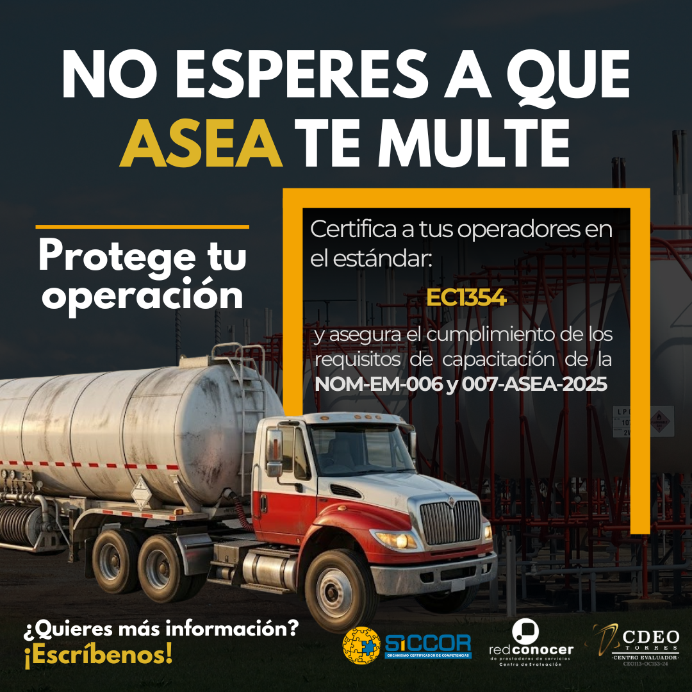
Creativo 1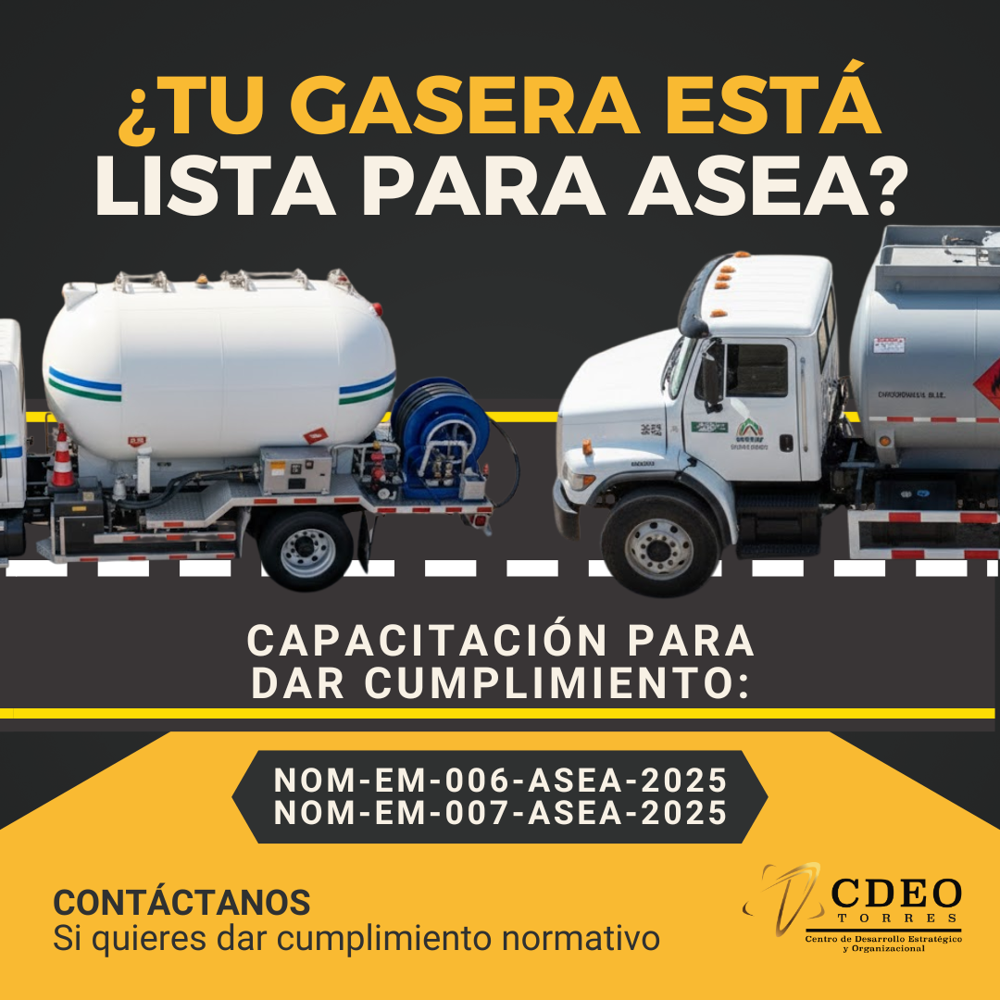
Creativo 2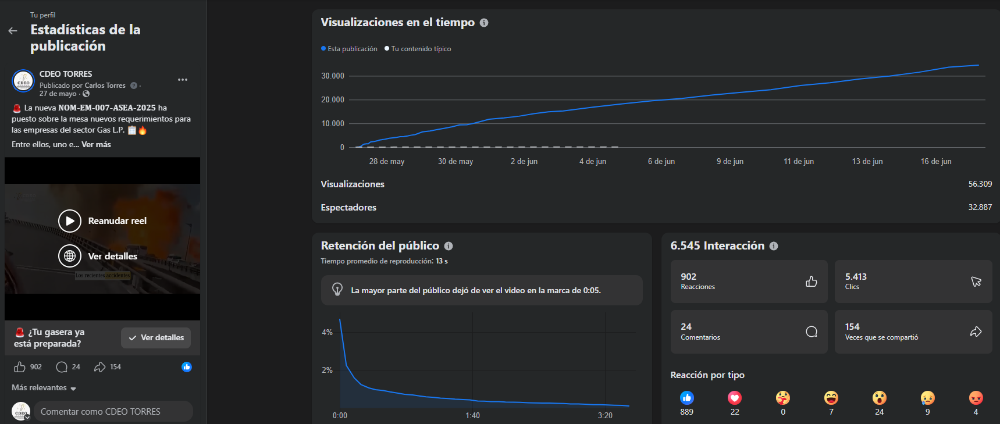
Estadísticas del videoResultados
El video principal se convirtió en la pieza central de la estrategia de comunicación, superando las 50,000 visualizaciones y funcionando como principal activo para captar el interés de empresas distribuidoras de gas LP.
Empresas distribuidoras de gas LP de México interesadas en cumplir con la NOM-EM-007-ASEA-2025 mediante capacitación y certificación especializada.
- Estrategia comercial B2B.
- Concepto creativo.
- Producción audiovisual.
- Diseño de creativos.
- Desarrollo de landing.
- Implementación de campaña.
03
Marketing de contenidos
Desarrollo de contenido digital para fortalecer la comunicación de marca mediante diseño gráfico, producción audiovisual y adaptación de mensajes para redes sociales.
El reto
Mantener una presencia digital constante para una marca especializada en certificación y capacitación, transformando servicios técnicos en contenido claro, atractivo y adaptable para plataformas digitales.
Comunicación de estándares, certificaciones y beneficios mediante piezas diseñadas para informar y generar confianza.
Desarrollo de materiales enfocados en promoción de servicios, captación de prospectos y campañas digitales.
Creación de contenido orientado a reforzar presencia de marca, autoridad y comunicación corporativa.
Producción audiovisual
Biblioteca visual
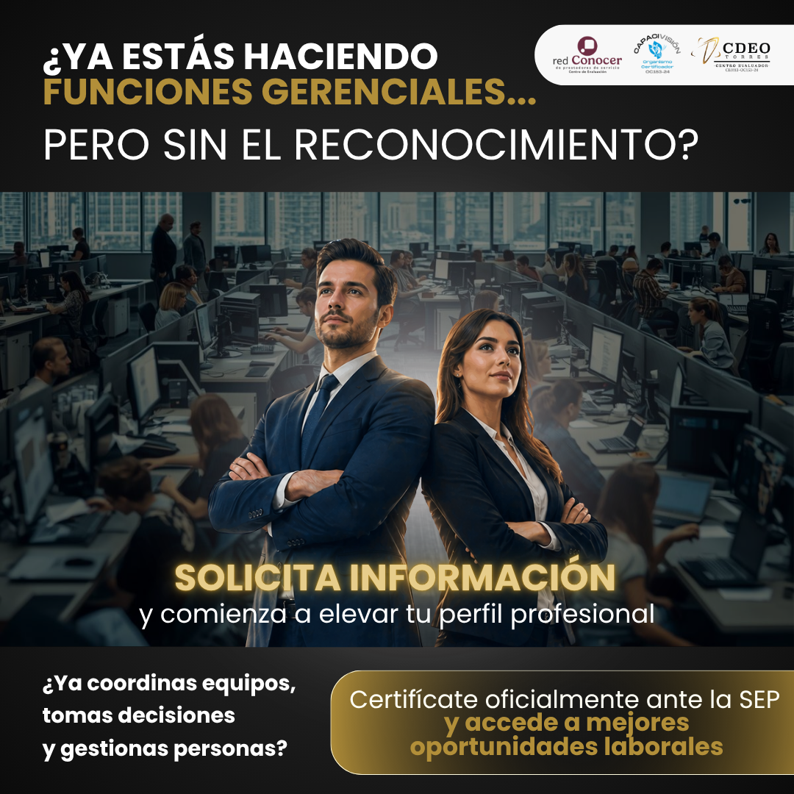
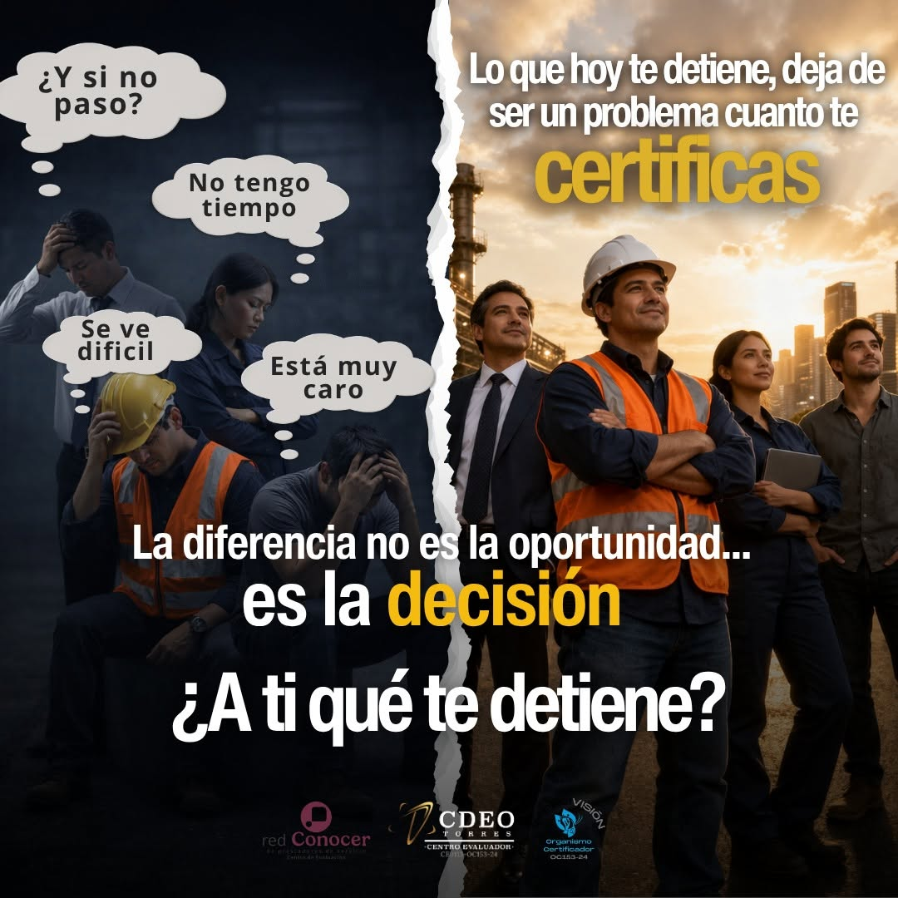
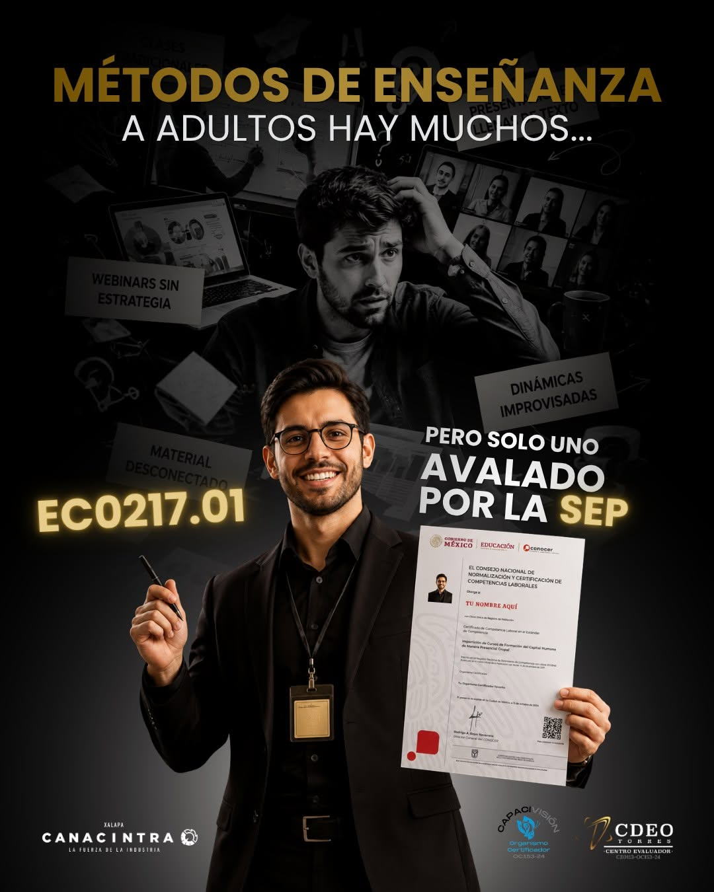
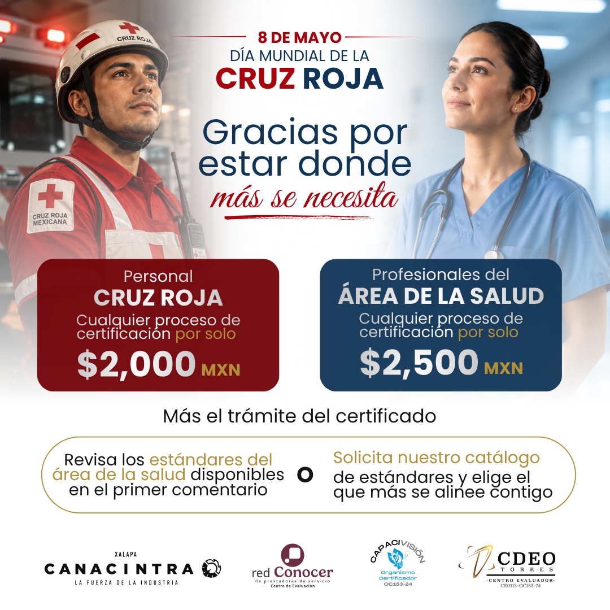
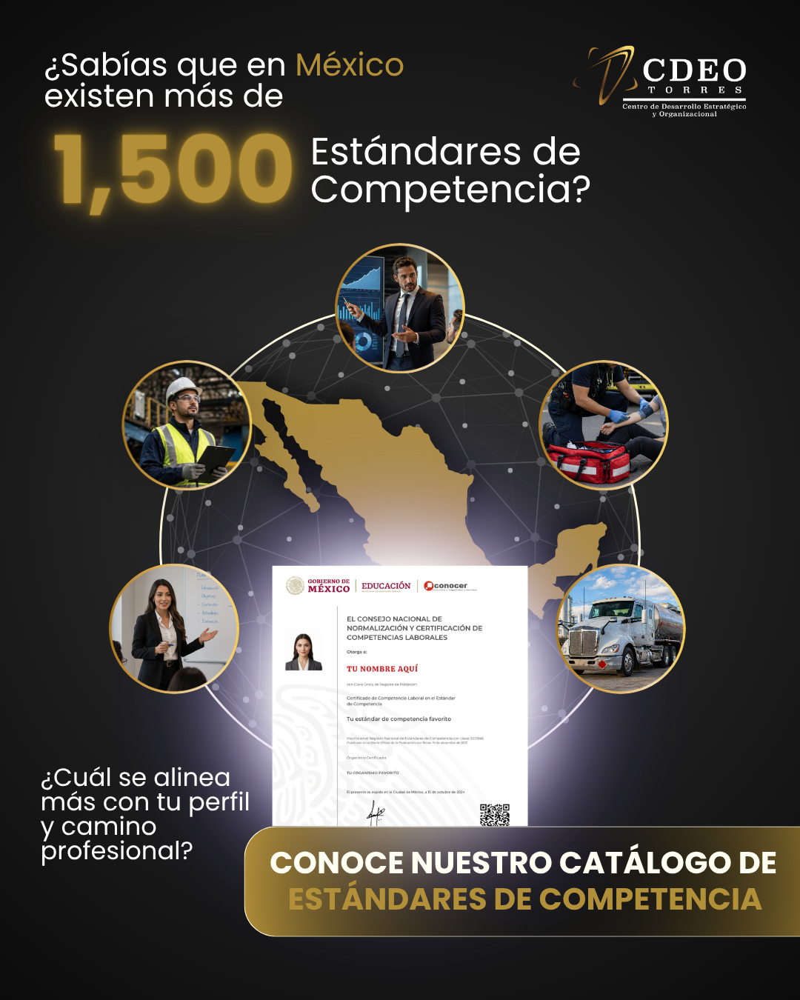
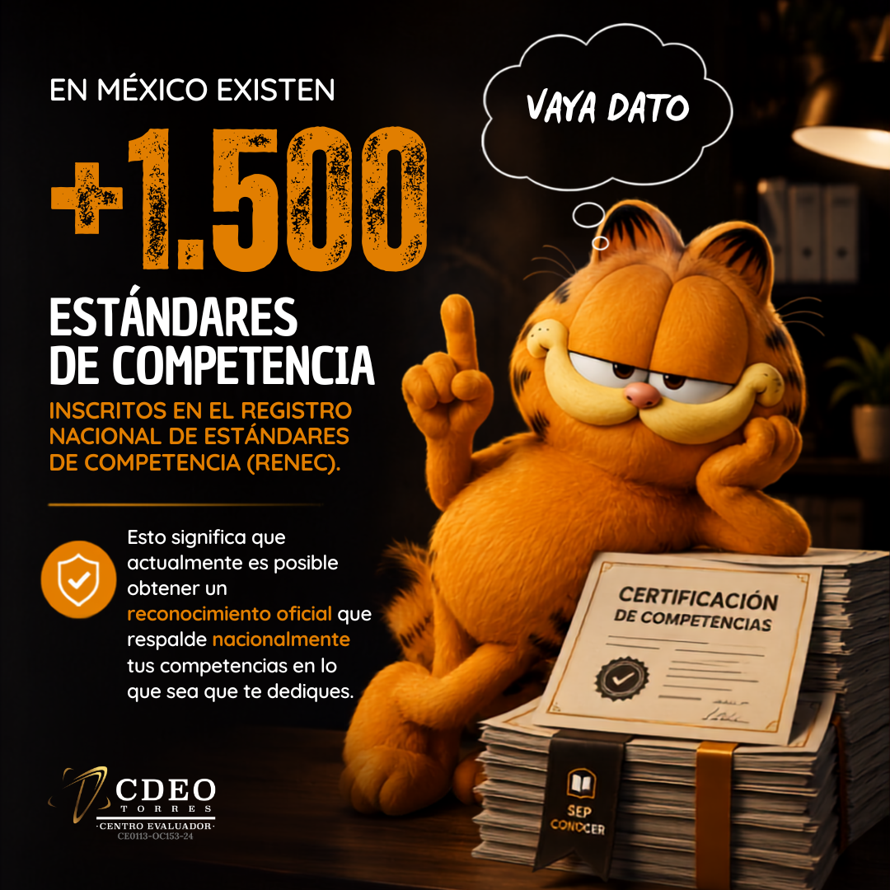
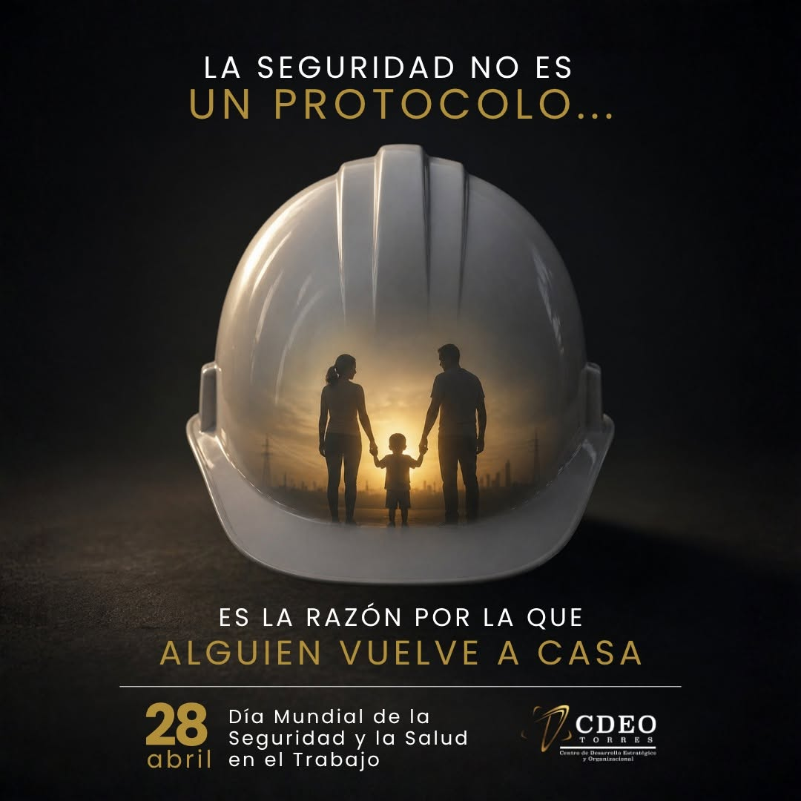
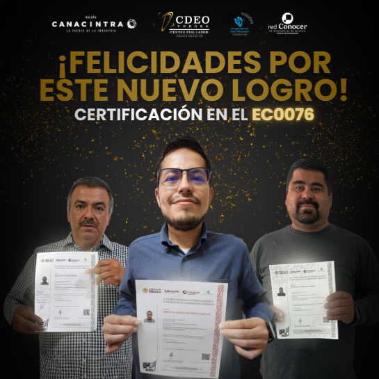
04
Desarrollo web
Diseño y desarrollo de una experiencia web para comunicar servicios técnicos, organizar información institucional y facilitar la captación de prospectos.
Convertir servicios técnicos en una experiencia web clara, navegable y orientada a la conversión.
Arquitectura de información, diseño en WordPress y ejecución del sitio principal.
Sitio principal funcional, diseñado para presentar servicios y apoyar campañas de captación.
05
Automatización de procesos
Desarrollo de soluciones digitales para reducir tareas manuales mediante automatización documental, integración de herramientas y validación de información.
El reto
Optimizar procesos administrativos repetitivos que dependían de captura manual, generación individual de documentos y validación tradicional de información.
- Captura manual de información.
- Edición individual de documentos.
- Exportación manual de archivos.
- Validación mediante búsqueda interna.
- Carga estructurada de datos.
- Generación automática de documentos.
- Organización digital de archivos.
- Validación mediante identificadores únicos.
Sistema desarrollado